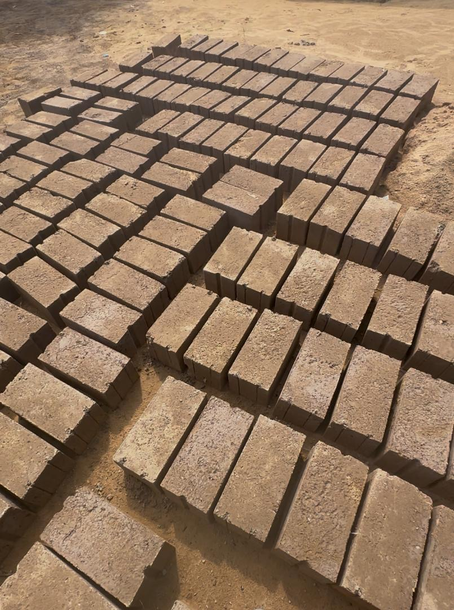
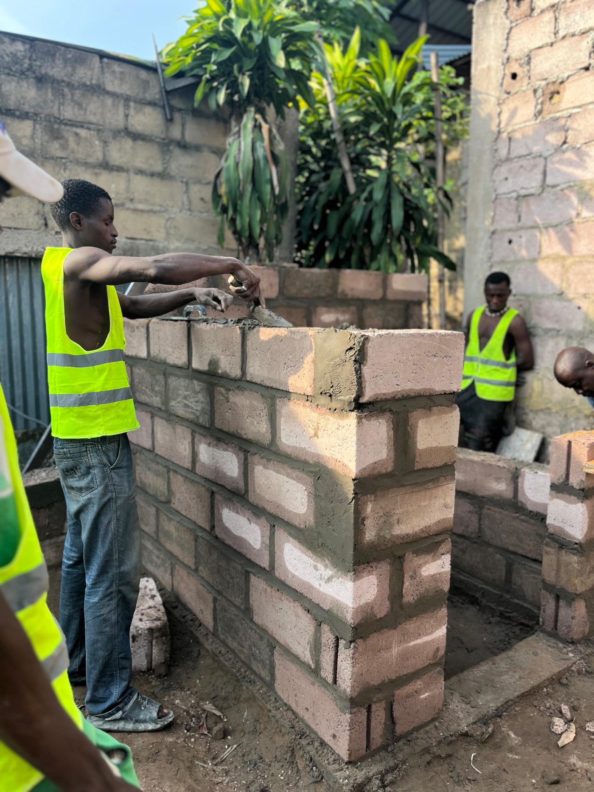
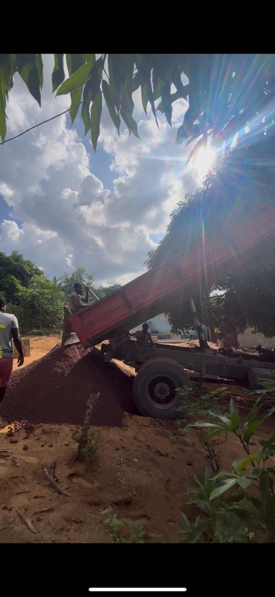
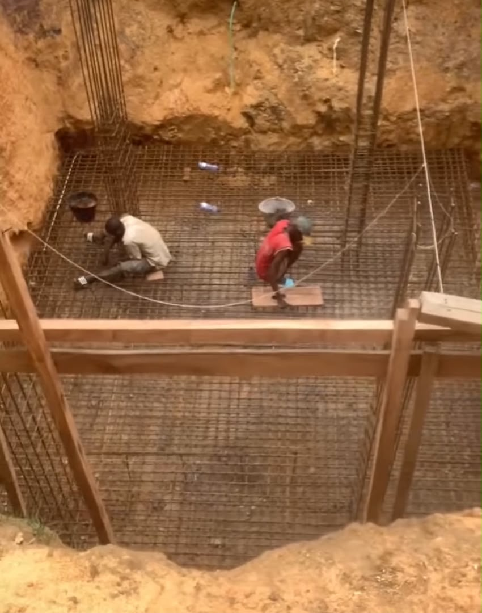
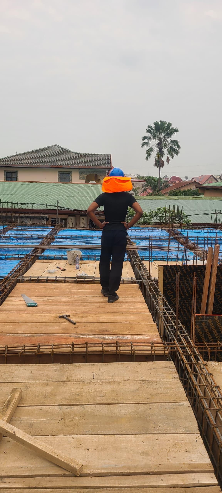
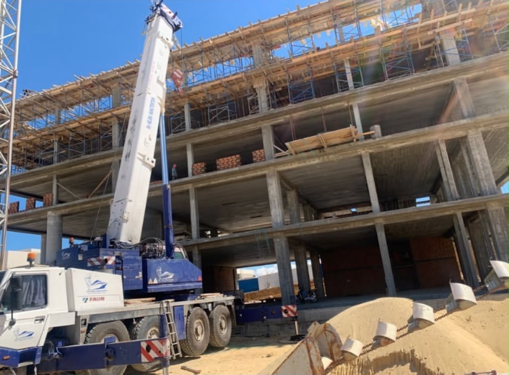

Mulohwe Group : Architecture, Construction et Matériaux Locaux
Mulohwe Group est un partenaire local de construction et de matériaux dirigé par Nathan Mulohwe, soutenant l’architecture, le développement de construction, la maçonnerie et les solutions pratiques de bâtiment en RDC. Pas de concepts abstraits — de vrais chantiers, de vraies briques, de vrais bâtiments.
Nathan Mulohwe
Nathan Mulohwe dirige Mulohwe Group avec une approche pratique axée sur l’architecture, le développement de construction et la production de briques et matériaux de construction pour les besoins locaux du bâtiment. Pour SUJO Engineering Consulting, ce partenariat renforce la capacité locale d’exécution en reliant la planification technique à l’expérience de chantier, aux matériaux fiables et à la réalisation pratique des projets.
« Des plans d’ingénierie transformés en résultats construits — de vraies briques, de vrais murs et de vrais chantiers sur lesquels on peut marcher. »
De la Briqueterie au Bâtiment Fini






Une Expertise de Construction Ancrée dans l’Exécution Locale
Mulohwe Group contribue à l’écosystème local de la construction par l’appui à la conception, la coordination de chantier, les travaux de maçonnerie et la production de matériaux. Leur travail démontre la capacité pratique de terrain qui permet aux plans d’ingénierie de devenir des résultats construits.
C’est le genre de partenaire que SUJO est fier de soutenir : architecture et planification, développement de construction, matériaux locaux et maçonnerie — le tout réalisé par des équipes de terrain en RDC.
Vous Souhaitez Collaborer avec Mulohwe Group ou SUJO ?
SUJO peut coordonner les études techniques, l’estimation des coûts, l’approvisionnement et le développement de projet tout en collaborant avec des partenaires locaux comme Mulohwe Group pour l’exécution pratique de construction. Contactez-nous et nous vous mettrons en relation avec la bonne équipe.
Contactez-nous : contact@sujo-engineering.com